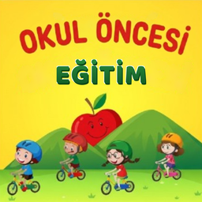

Gizlilik Politikası
Okul Öncesi Eğitim · Yürürlük tarihi: 28 Ekim 2026
Bu politika, Neşet Can Salık tarafından okul öncesi yaştaki çocuklar için geliştirilen Okul Öncesi Eğitim uygulamasının ("Uygulama") hangi verileri nasıl işlediğini açıklar. Uygulama çocuklara yöneliktir; bu nedenle politika ebeveynler ve veliler için yazılmıştır.
1. Uygulamanın kendisi topladığı veriler
Uygulama hesap, üyelik ya da giriş istemez. Çocuğunuzdan veya sizden ad, e-posta, telefon numarası, adres, konum, fotoğraf, ses kaydı gibi hiçbir kişisel bilgi toplamaz. Ses ve müzik tercihleri yalnızca cihazda saklanır, hiçbir sunucuya gönderilmez; uygulamayı silmek bu tercihleri de siler. Sesli anlatım cihazın kendi metin okuma (TTS) özelliğiyle, cihaz üzerinde yapılır.
2. Reklamlar (Google AdMob)
Uygulama ücretsizdir ve Google AdMob ile reklam gösterir. Çocukların güvenliği için:
- Tüm reklam istekleri "çocuklara yönelik" olarak işaretlenir (COPPA kapsamında çocuklara yönelik muamele).
- Reklamlar en fazla "G" (genel izleyici) içerik derecesiyle sınırlandırılır.
- Kişiselleştirilmiş (ilgi alanına dayalı) reklam gösterilmez ve yeniden pazarlama yapılmaz.
- Reklam kimliği (iOS'ta IDFA, Android'de reklam kimliği) izleme amacıyla kullanılmaz; iOS'ta izleme izni (App Tracking Transparency) istenmez.
AdMob, reklamları göstermek, ölçmek ve sahtekârlığı önlemek için cihaz türü, işletim sistemi, IP adresi ve reklam etkileşimleri gibi sınırlı teknik verileri işleyebilir. Google bu verileri kendi politikalarına göre işler: Google Gizlilik Politikası · Google'ın çocuklara yönelik reklam uygulamaları.
3. Videolar (yalnızca Android)
Android sürümündeki "Videolu Öğrenim" bölümü, herkese açık eğitici YouTube videolarının küçük resimlerini gösterir ve bir videoya dokunulduğunda onu YouTube uygulamasında ya da tarayıcıda açar. Küçük resimler YouTube sunucularından yüklendiği için YouTube cihazın IP adresi gibi teknik bilgileri alabilir. Uygulamadan çıkıldıktan sonra Google/YouTube gizlilik politikası geçerlidir. Ebeveynlerin bu bölümü çocukla birlikte kullanmasını öneririz.
4. Çocukların gizliliği
Uygulama çocuklara yöneliktir. ABD Çocukların Çevrimiçi Gizliliğini Koruma Yasası (COPPA), AB Genel Veri Koruma Tüzüğü (GDPR) ve 6698 sayılı Kişisel Verilerin Korunması Kanunu (KVKK) dahil ilgili mevzuata uygun olarak çocuklardan bilerek kişisel veri toplamayız. Uygulamada sohbet, mesajlaşma, kullanıcı içeriği paylaşımı veya uygulama içi satın alma yoktur.
5. Verilerin saklanması ve silinmesi
Uygulamanın kendisi sunucuda veri saklamadığı için silinecek bir hesap yoktur. Cihazdaki tercihler uygulama silindiğinde silinir. Google'ın işlediği veriler için haklarınızı Google Gizlilik Politikası'ndaki yollarla kullanabilirsiniz.
6. Değişiklikler
Bu politika güncellenirse yeni sürüm bu sayfada, güncel yürürlük tarihiyle yayınlanır.
7. İletişim
Ebeveynler ve veliler soru ve talepleri için neset.salik@gmail.com adresine yazabilir.
Privacy Policy (English)
Effective date: October 28, 2026
Okul Öncesi Eğitim ("the App") is a free educational app for preschool children, developed by Neşet Can Salık. The App requires no account or login and does not collect any personal information such as name, email, phone number, address, location, photos or audio. Sound and music preferences are stored only on the device and are deleted when the App is uninstalled. Voice narration uses the device's built-in text-to-speech, on the device.
The App shows ads through Google AdMob. All ad requests are tagged as child-directed and limited to the "G" (general audiences) content rating. No personalized (interest-based) ads or remarketing are shown, the advertising identifier (IDFA / Android advertising ID) is not used for tracking, and the App does not request App Tracking Transparency permission. AdMob may process limited technical data (device type, operating system, IP address, ad interactions) to serve and measure ads and to prevent fraud, under the Google Privacy Policy.
On Android only, the "Videolu Öğrenim" (Video Learning) section shows thumbnails of public educational YouTube videos and opens a video in the YouTube app or browser when tapped. Thumbnails are loaded from YouTube's servers, which may receive technical data such as the device's IP address.
The App is directed to children. In line with COPPA, GDPR and Turkey's KVKK, we do not knowingly collect personal data from children. The App has no chat, messaging, user-generated content or in-app purchases. Changes to this policy will be posted on this page with a new effective date. Parents and guardians may contact us at neset.salik@gmail.com.